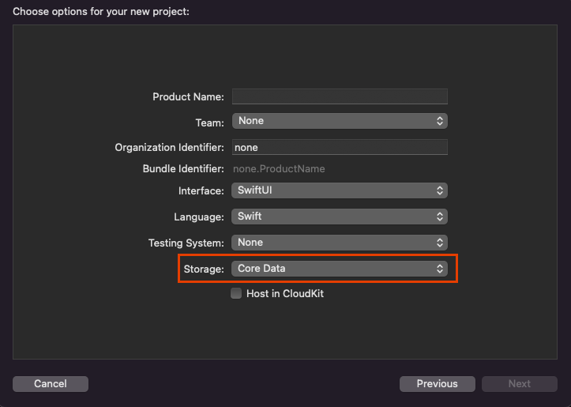

Core Data et SwiftUI
Introduction
Dans le développement iOS, il est courant de stocker des données structurées (par exemple, listes de contacts, tâches, produits, etc.).
Problème avec les bases de données traditionnelles :
Utiliser directement des bases de données embarquées comme SQLite nécessite des connaissances en SQL et engendre une complexité dans le code (nature non orientée objet).
Solution proposée par Apple :
Core Data est un framework qui permet de travailler avec les données sous forme d’objets Swift. Il encapsule les interactions avec la base de données (par défaut SQLite) et simplifie le traitement des données en éliminant la nécessité de maîtriser le SQL.
Les Principaux Composants de Core Data (Core Data Stack)
La Stack Core Data se compose de plusieurs objets qui travaillent ensemble pour gérer le stockage persistant :

Référence : Neil Smyth. iOS 18 App Development Essentials. Payload Media, Inc.
Persistent Container
Rôle :
Persistent Container gère la création de la pile Core Data et est conçu pour être facilement sous-classé afin d'ajouter des méthodes spécifiques à l'application à la fonctionnalité de base de Core Data. Une fois initialisé, l'instance de conteneur persistant fournit l'accès au contexte de l'objet géré.
Fonctions clés :
- • Créer le modèle de données (via un fichier .xcdatamodeld).
- • Charger les persistent stores (SQLite, XML, binaire ou mémoire).
- • Fournir le Managed Object Context via la propriété viewContext pour interagir avec les objets gérés.
Managed Object Context (MOC)
Rôle :
Le MOC agit comme une zone tampon qui contient les objets gérés (instances de NSManagedObject ou de ses sous-classes) avec lesquels l’application interagit.
Fonctions clés :
- • Gérer les objets et leurs états (nouveaux, modifiés, supprimés).
- • Conserver temporairement les changements avant de les sauvegarder dans le persistent store.
- • Effectuer des fetch requests pour récupérer des données selon des critères donnés.
Managed Object Model
Rôle :
Il définit la structure des données sous forme d’entités (semblables aux tables dans une base de données relationnelle).
Contenu :
- • Entités (Entities) : Par exemple, une entité “Contacts” avec des attributs comme “name”, “address” et “phone”.
- • Attributs (Attributes) : Définit le type de données à stocker pour chaque entité.
- • Relations (Relationships) : Permettent de définir des liens entre différentes entités (one-to-one, one-to-many, many-to-many).
Persistent Store Coordinator
Rôle :
Il gère les persistent stores (fichiers de stockage) et coordonne les interactions entre le MOC et le store.
Fonctions clés :
- • Charger et sauvegarder les données dans le store.
- • Effectuer des migrations de données lors de changements de modèle.
- • Permettre l’utilisation de plusieurs stores pour une même application.
Persistent Store
Rôle :
C’est le support de stockage réel. Par défaut une database SQLite.
Fonctions clés :
- • Le choix du type de store (SQLite, XML, binaire ou mémoire) est généralement transparent pour le développeur.
Création et édition du modèle de données
Définition du modèle d’entités dans Xcode
Lors de la création d’un projet avec Core Data, Xcode génère un fichier .xcdatamodeld. Ce fichier sert de modèle pour structurer les données que l’application va gérer. Il définit les entités, leurs attributs, et les relations entre elles, permettant ainsi à Core Data d'interpréter et manipuler ces objets.
Exemple de modèle d'entités dans Xcode.
Pourquoi utiliser un modèle d’entités ?
- • Il simplifie la gestion des données en représentant les objets sous forme de modèles Swift.
- • Il permet d'automatiser les opérations CRUD (Create, Read, Update, Delete) sans écrire du SQL.
- • Il assure l'intégrité et la cohérence des données en définissant des contraintes et des relations.
Ce fichier vous permet de :
- • Ajouter des entités (cliquez sur “Add Entity”).
- • Définir des attributs pour chaque entité (nom, type, contraintes, etc.).
- • Établir des relations entre entités (ex. : un produit appartient à une catégorie).
Étapes pour définir une entité :
- Ouvrez le fichier .xcdatamodeld dans Xcode.
- Cliquez sur “Add Entity” en bas du panneau de gauche.
- Renommez l’entité par un nom significatif (ex. : “Product” pour stocker des informations sur les produits).
- Ajoutez des attributs en cliquant sur le bouton “+” sous la section Attributes.
- Définissez le type de chaque attribut :
- • String : Pour stocker du texte (ex. : nom du produit).
- • Integer : Pour stocker des nombres entiers (ex. : stock disponible).
- • Double : Pour stocker des nombres décimaux (ex. : prix).
- • Date : Pour enregistrer une date (ex. : date d’ajout).
- • Boolean : Pour des valeurs vraies ou fausses (ex. : disponible en stock ?).
- Si nécessaire, établissez des relations avec d'autres entités en utilisant l’onglet “Relationships”. Par exemple, une entité “Product” peut être liée à une entité “Category” avec une relation one-to-many (un produit appartient à une seule catégorie, mais une catégorie contient plusieurs produits).
Conclusion
Core Data simplifie la gestion des données en encapsulant les opérations de base de données. En définissant un modèle clair, en utilisant les fonctionnalités de persistance et en effectuant des requêtes optimisées, il est possible de créer des applications performantes et évolutives.